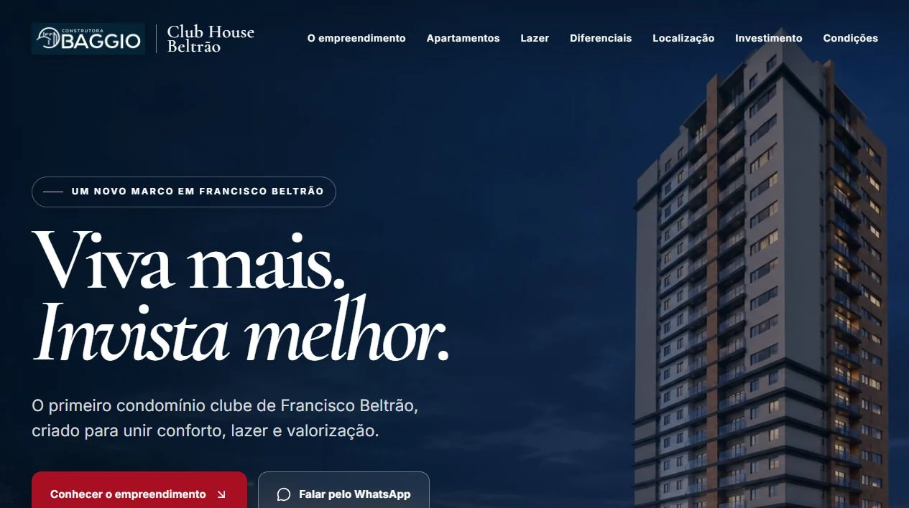

Encontrar
Uma estrutura preparada para aparecer quando existe intenção de compra.
Presença digital para empresas reais
Enquanto sua empresa não aparece, a concorrência ocupa a busca, conquista a confiança e fecha a venda.
O custo de não aparecer
O cliente não começa mais pela rua. Começa pela busca. Se a sua empresa não transmite autoridade nos primeiros segundos, outra empresa recebe o contato.
Uma estrutura preparada para aparecer quando existe intenção de compra.
Design e conteúdo que eliminam a dúvida antes da primeira conversa.
Caminhos de contato claros que transformam interesse em oportunidade.
Profundidade com propósito
Cada camada existe para conduzir o cliente: fundação técnica, autoridade visual e uma rota sem atrito até a conversa comercial.
Ver a engenharia aplicadaFundação
Ecossistema
Escala
Engenharia que pode ser vista

Clareza antes do código
Entendemos negócio, mercado, concorrência e intenção de compra.
Definimos narrativa, identidade e a rota de conversão da experiência.
Transformamos estratégia em uma interface rápida, acessível e responsiva.
Publicamos, conectamos, medimos e deixamos a base pronta para escalar.
O cliente já está procurando
Fale com o Matheus e receba um diagnóstico direto do espaço que sua empresa ainda não ocupa no digital.
Agendar diagnóstico no WhatsApp Conversa direta • Sem compromisso • Resposta humana